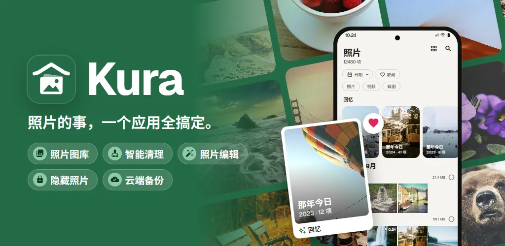
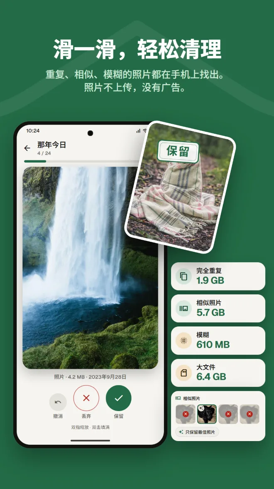
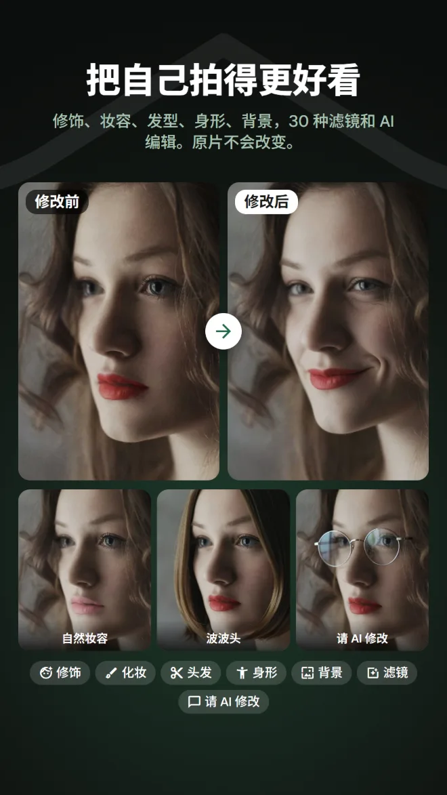
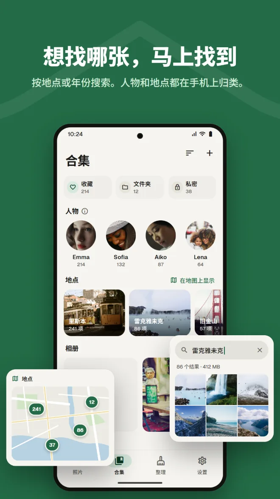
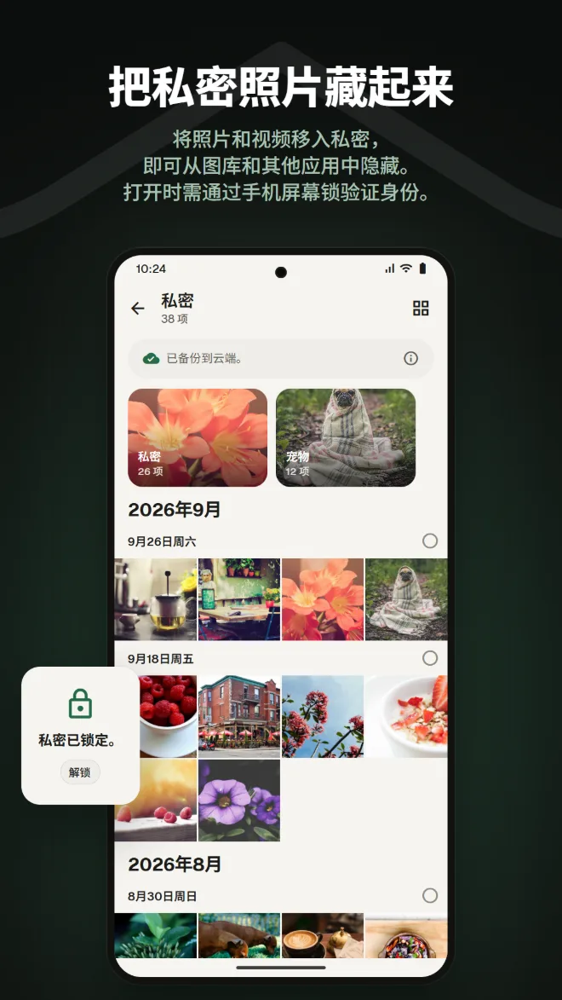
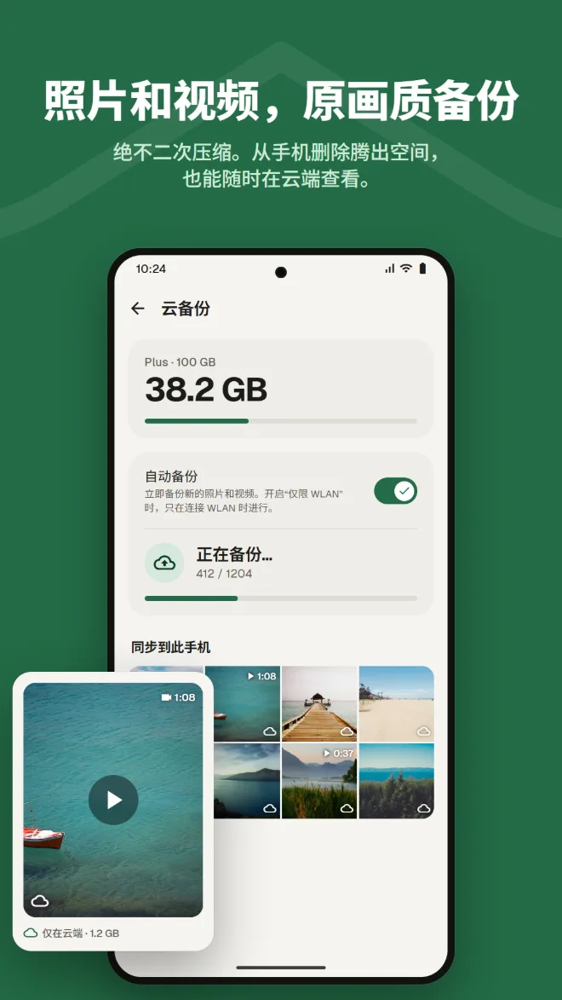
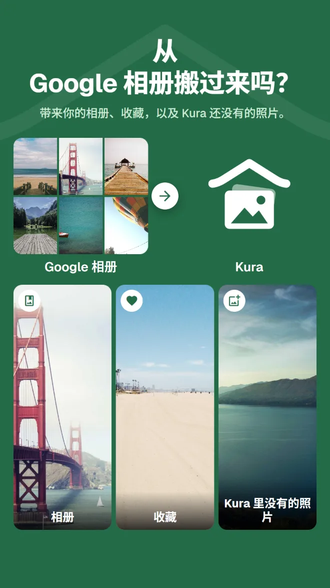

按内容搜索
按地点、照片内容或照片中的文字找照片。
图库、清理、AI 编辑、私密、备份，以及从 Google 相册迁移。有了 Kura，不必再为每件事各装一个应用。
Android 11 及以上 · 浏览、整理和删除均免费 · 使用 Google 账号登录

看照片用图库，腾空间用清理应用，编辑再换个应用，备份又是另一个服务。每切换一次，就得重新找一遍同一张照片。
Kura 在一个图库里全部搞定。
同一批照片，在同一个地方查看、清理、编辑和备份。
从图库到清理、编辑、迁移和备份，一次看完。
Kura 在手机上找出完全重复、相似照片、模糊照片和大文件。向右滑动保留，向左滑动丢弃，能释放多少空间一眼就知道。

修饰、塑形、妆容、头发和背景，还有 30 种滤镜、调整和裁剪。美食滤镜让菜品更诱人，身形工具调整全身比例。始终另存副本，原片保持不变。

按日期排列的网格，还有往年同一天的回忆。可按地点、照片内容或照片中的文字搜索，面孔在手机上按人物归组。

将照片和视频移入私密，即可从图库和其他应用中隐藏。打开时需通过手机屏幕锁验证身份。

照片和视频不重新压缩，原样备份。从手机删除已备份的副本以释放空间，仍可在云端查看。

只需从应用或网页版发送 Google Takeout 的 .zip 文件，Kura 就会带来你的相册、收藏，以及 Kura 还没有的照片。解压由 Kura 的服务器在后台完成，应用和浏览器都可以关掉。

Kura 云端里的照片，在网页版中也能像在应用里一样查看、整理、清理、编辑、分享和上传。收藏与应用保持同步。
打开网页版使用 Google 账号登录 · 仅提供英文和日文
日常使用的图库该有的功能，一应俱全。
按地点、照片内容或照片中的文字找照片。
面孔在手机上按人物归组，照片还能在地图上查看。
往年同一天拍的照片，显示在图库顶部。
亮度和色彩调整、裁剪和画笔，还有美食滤镜。
设置有效期和密码，没装应用的人也能收到。
每次打开都用屏幕锁确认。还可以把私密隐藏起来。
装好后，你的照片就会整理好呈现在眼前。
从 Google Play 下载（Android 11 及以上）
选择“全部允许”，载入整个照片库
使用你的 Google 账号登录
马上开始整理，需要时再添加备份
没有广告。只有使用云端时才需付费。
手机上能做的一切
通过 Google Play 按月付费，可随时取消
Google Play 会以你所在地区的货币显示价格。
只有当你执行明确会把照片发送到某处的操作时，照片才会离开手机。
重复、模糊、面孔、物体和文字的识别都在手机上运行，不会为整理而上传任何照片。
删除任何文件之前 Android 都会向你确认，丢弃的照片会留在回收站，直到你清空它。
登录时，我们的服务器只保存你的 Google 账号 ID，绝不会发送你的姓名和邮箱地址。
AI 编辑只发送面部周围的区域，照片和结果都不会保留在服务器上。
无广告 · 浏览、整理和删除均免费